|
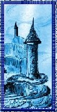
¿Dónde
irán los que sueñan a soñar?. . .
¡Nuevo! "Cauce herido" de Any Carmona para Abrazo inesperado pintura y poema de Graciela María Casartelli "Cauce herido" de Any Carmona para Abrazo inesperado pintura y poema de Graciela María Casartelli
José Pivín
*Mary
Acosta
*Vicente Aiello
*Josefina Algar
*María Cristina Aliaga Luna
*Nelly Antokoletz
* Poeta Arteche
*Juan Benavente
*Marina Bernal
*Françoise Marie Benard
*Silvana María
Bixio
*Marta Cabrera
*Cris Carbone
*Libia Beatriz Carciofetti
*Tesy Cariaga
*Jaime Correa
*Yolanda Corzo
*Verónica Díaz
*Carlos Fernández (España)
*Alty, Gaviota del alba
*Iris
Girón Riveros
*Sandra Goddio
*Carlos R. Lemberg
*Luiz Poeta
*Juan Carlos Maidana
*Matilde Maissonave
*Marga Mangione
*María Rosa (Reflexion
y Poesía)
*Mayra Romero
*Rafael Paredes B
*Elsa Patterer
*Alberto Peyrano
* Nilda Pigazzini
*José Pivín
*María
Beatriz Pombo
*Julia del Prado
*Paty Rodríguez
*Sagitariana
* Antonio M Sardenberg
*Oscar Omar Sortino
*Rubén Techera Moreira
*Ligia Tomarchio
*Mary Trujillo
|
|
|
Fiestas 2013- Año nuevo 2014
Gratos recuerdos de gente querida.
Lo que sucedió, lo actual, lo que será
Bendiciones, Fe, Esperanza y Confianza
Graciela María Casartelli (67)
|
La vida, ese don...
de Fausto del Castillo Estéban
¡Nuevos! *Cómo nació el festejo de la Navidad... Un poco de historia
*Recuerdo |
|

¡Nuevos!Luna
*Heridas del corazón (Florencio Casartelli)
*Tu llamado de la medianoche (Inés Setuain)
|
Molinos de Viento
de José Martiniano González Peraza (Cuba)
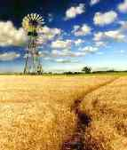
¡Nuevo! Magalys
|
|
¿ Qué es poesía? 
Poesía, eres tú...
¡Nuevo! La vida, de Caia Cantarelli, ilustrado con la pintura de Graciela María Casartelli, "Escándalo" |
|
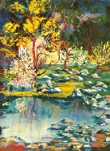
"
Escondrijo de duendes"
"Escondrijo
de duendes I"
¡Nuevo! "Niñez", por
Cristian David Juez (Argentina)
de Mensajes del Alma

"Romance en lilas y celestes" Pintura acrílica de Graciela María Casartelli
Una
historia para el
"Escondrijo..."
por Raquel Luisa Teppich
. . .
|
|
POR NOSOTROS...
Poemas con el alma
por Adolfo Rubén Zabalza. (Argentina)
¡Nuevos!*Reflexiones navideñas
*Feliz Nochebuena, amigos!!!!!
|
|
| |
|
Cuentos en azul
por Elena Ortiz Muñiz (Estrella de Belén)(México)
¡Nuevos!* El ladrón de sueños (cuento)
*Decretos en el año que comienza |
|
Serenidad
de atardecer
por Ana Luisa Arellano Excelente
¡Nuevo! *Un mundo aparte
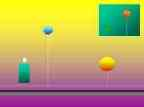
Imagen diseñada por Fernando Cianciola
|
|
Escribir un poema...
¡Nuevo!* Palabras para Navidad
por Carlos M. Rentería de la Cruz (Colombia) |
|
Desde
mis silencios...
por María
Cristina Garay Andrade (Argentina)
¡Nuevo! *Dilema... |
|
Alberto Fernández
¡Nuevo! Cuento de Navidad: ¡Algo habrá hecho!
|
|
Desde el corazón
por Juan Pomponio Castiglione
Entrevista con el artista plástico radicado en Argentina, Antonio Francisco Pujia
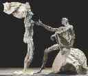
|
|
De mí
poesías
por Victoria
Servidio
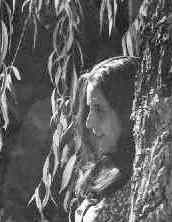
¡Nuevo! *Del amor y sus bemoles:
En la vastedad de la ausencia
|
|
|
*Soñar, con Ana María Zacagnino y Homenaje al Santo Padre Francisco I
*Gorjeos
primaverales por Josefina Algar Aranda
*Antonio Cristóbal Pourrère * La cítara...
*Un suspiro, Delfina Acosta
*Cantos
en... por Norton
Contreras
*Escribir
un poema...Carlos Rentería de la Cruz
*Espacio de Reflexión de
Mary Acosta Con el alma en la palabra
*Con el ala dañada por Ruth Noemí Kordysz de Panelli
*Carlos D. Laurans y su obra
*Homenaje a las lluvias del verano- José Cedrón
*Aportes de Eloy Lima
*A San Javier de Traslasierra (J.C. Iribarren)
*Desolación y otros (Iris Girón Riveros)
*Escribir por intuición (Oscar Roque Ruiz)
*Rolando Revagliatti, con nosotros
*La argentina insolente (Dr. Mario Rosen)
*Elsa Patterer Entre hadas y duendes
*Algo lejano, una historia del río Danubio (Eloy Lima)
*Si yo fuera pintor (Marily A. Reyes)
*¿Del amor?...Juan Carlos Siárez
*Un suspiro... con Delfina Acosta...
*Dardo Noguera le canta a su Chaco y a la Patria
*Sobre el filo de la esperanza...
*Reflexiones
*Tiempos de siembra... (Silvana Bixio)
*Polifemo (Edgardo Minniti Morgan)
*Molinos de viento (poemas desde Cuba) de José Martinano González Peraza
*Sentir gitano(Manuel Cortés de Gabriela)
*Antonio Cristóbal Pourrère * Miedo..
*Poemas desde Salta, Belisario Luis Romano
*Tendido de Sol Maduro Julia del PradoMorales
*La mirada en la distancia...por Elsa Patterer- Su obra- "El Milagrito de los Duendes" .
*Reflexiones
*El arte de vivir mejor * Sobrevivir tiempos difíciles, no es para cobardes (John Mohawk)*Senderos en el bosque por Jesús Alejandro Godoy*Homenaje a nuestra amiga del alma Mabel Fernández de Pertile "En el pétalo de una flor"*Obra autobiográfica de Rosita Acosta Dacosta de Asunción del Paraguay *Memorias* y su trabajo como escultora
*Obra de Evalyna (Eva Soto)"Creencias sobre la vida y la muerte". Presentación
*Carta a Marcelo por Elsa Patterer
*La última melodía. Cuento. por Graciela María Casartelli
*Trizas por Gaviota del Alba (Altagracia Berrios)
*Demasiados años de soledad por Graciela María Casartelli
* El regreso por Griselda Buscaglia
"Religión A..F.C."
"El chateo por internet" Salvador Nassif
"La magia de las manos" Walter Vera
"El resplandor de un dolor" Alvaro Izurieta
"La dignidad de ser"Luis Bernardi
"A cántaro lleno" Roxana Serra
"El lenguaje del instante irrepetible" R. Oliva
"Sentir la música en la piel" Gustavo Zaka
"La magia de un pincel" Néstor Verón
"El sol en su cenit" Hernán Testa
"Esquirlas" Milvia Verónica El Hay
"El sueño del espejo" María T. Ruiz
"Cuerdas de sol" Pablo Izurieta
"Juego de manos" Gabriel Engelland
Taller de pintura "Sereno"(Unq.Cba.Ar.)
"Tras el paisaje" Rosa Sáez
"La búsqueda de equilibrio" Marta Z. de Rosso
"Construyendo una vida" María B. Pombo
"Quietud y movimiento" Mariana Brihuega
"La fábrica de sueños" R. Techera Moreira
"Aquel prado verde..." Amanda Avaro
"Un viaje a través del amor" Nora Lanzieri
"Ansenuza...¿Hasta cuándo?" Graciela. María. Casartelli
"¿Qué le pides a Dios cuando rezas?" Poldy Bird
"Siempre el amor..." J.O Huachani Sáchez
"Desde el vuelo" Eugenia Galván"
“Hablamos de Héctor Cediel Guzmán"
"La poesía y los niños" Prado Morales- R.de Almagro
"El triunfo de la esperanza" Sobre la obra
"Armas del poeta" de Victoria Servidio.
"La estudiantina Monteflor de Guatemala"
Cartas de dos padres a sus hijos
(Juan C. Iribarren y Héctor Cediel)
"El fantasma del tiempo" .Sobre la obra
"OPEN DOOR” de Gabriela Bruch
"Dios viaja conmigo" Nelly Antokoletz
"Vivencias de mi alma" Elsa Patterer
"El misterio de Láscar" Iván Aarón
"de la artista plástica Cristina Misiunas" |
|
|
|
Al regreso de las gaviotas...
por Domingo Hernández(Cuba)
¡Nuevo!*Enfermo |
|
Hacia
el Infinito
por Victoria
Lucía Aristizábal 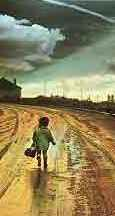
¡Nuevo!Mágicos días
|
|
Cantos en...
por Norton Contreras (Perú)
¡Nuevo! * Variación de balada
para una poeta |
|
Boris Gold(Argentina)
¡Nuevo!*Un milagro en Navidad |
|
|
|
Sentir
de poeta
por Alta Gracia
Berrios (Gaviota del Alba)
(Puerto Rico)
¡Nuevo!*Mi alma |
|
Una
mirada diferente
por Carlos
Quaglia (Brasil)
¡Nuevos! *Esta noite de Natal
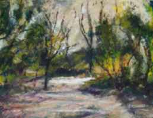
|
|
Poesía, un mundo insospechado
por Edgardo Ronald Minniti Morgan
¡Nuevo! Latinoamérica
|
|
"Elijo ser."..
Autor: Carlos Daniel Laurans (Argentina)
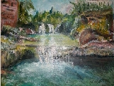
¡Nuevo!* Propuesta
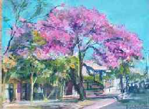
"Mi lapacho en flor" Pintura de Graciela María Casartelli
|
|
A
prudencial distancia del espejo
por Carlos Gallardo
Chambonet (Panamá)
¡Nuevo!*Alfarero
|
|
"Con
los pies en la tierra"
por Miguel Ángel Longarini
¡Nuevo!*Maestra Siembrasoldelhorizonte |
|
"Cantándole al tiempo"
¡Nuevo!* Disipa tu pena
Poemas de
* Emilio Pablo (Argentina) |
|
Haciendo clic sobre www.porloschicos.com
ayudarás a miles de niños carenciados
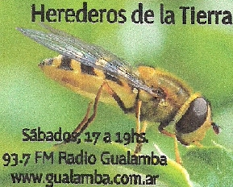
|
|
Continúa mis textos en otras páginas
En un segundo, la vida...
Cuán enojada estoy contigo
Atardecer
Tu mensaje
Pertenezco a la red mundial de escritores
Inocencia y perversidad (¿Y qué sucedió con los fundamentos
Video del poema "Juguete" realizado por Josefina Algar (España)
En un instante
*Video del poema "Ahora" realizado por Katy Dominguez Gomez(España)
Sin nombre
Tormento
Video con mi poema "Encontrarte"
editado por H.Sierra Molina
La partida
Tanto |
Accede desde
"Temas e historias anteriores"
"Sí..."
"El equívoco imperdonable"
"Revelación"
"Encuentro en el faro"
"Trizas"
"Tan cerca y tan lejos"
"Con el ala dañada"
*"El regreso"
*"Carta a una hija"
*"El pájaro enjaulado"
"Me duele el corazón de tanto amarte"
*Más...
*El desarraigo (Personas en búsqueda de nuevos horizontes)
*Amigos sin rostro (Amigos por Internet)
* Una ventana a la vida (Vanina)
*La sencillez de un corazón
(Anabel Calatayud)
*El último escalón (para adolescentes)
*Poema de agua de José Pómez
*"Por amor a la vida." Mirian Páez
*Una visión diferente" Carlos Quaglia
* El arte de vivir mejor (algunos aportes)
"Sobre el dolor y la enfermedad"(A todos los que padecen un
dolor, sin saber por dónde seguir...)
*Sobre
el filo de la esperanza...
*Reflexiones
*Tiempos de siembra (Silvana Bixio)
*Amor eterno (Paul Torres)
*Más... |
Lo que no decimos
por Graciela Bucci ¡Nuevos!*El quiebre de la historia |
|
|
|
|
|
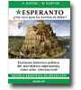
¿una cura a las heridas de Babel?
Un libro sobre el problema de la lengua internacional.
Tema sobre el que no se permite hablar, pero que
Se puede comprar por internet.
La edicion es a beneficio de AEL- Escuela Argentina de Esperanto
|
Discapacidad...
¿Es que se trata de seres diferentes?
Por Tía Mónica Aportes
*Conversar, conseguir una vida más independiente. Los discapacitados podemos trabajar. ¿Qué te da vergüenza de tu discapacidad? más...
|
|

"Caballito de mar" y "Rosa
de viento", por Argentino Casartelli.

|
|
Mis
poemas y textos en otras páginas
Sólo amar
Seguir
viviendo
Cuando
perdí la inocencia
Una sutil manera
Todos
los días
Obras
en castellano e italiano
Encontrarte
Indigente
Tras
los vidrios
"Nadie"
Amar
No eras para mí
Íntimo
Mi veneno
Tú querías
Cadalso
Destino
Fantasmas de la tierra
(también en Blog de Radio Sentidos)
Algunas de mis pinturas en "Artistas de la tierra"
En "Dulce Rincón", a Graciela María de Domingo Hérnández
Crespuscular
No intentes
Reunión familiar
Amar
|
|
|
|
| |
|
|
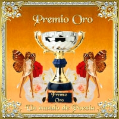
Premio
concedido por Elisabet Cincotta
|
|
Nota:
Cualquier error u
omisión que se observe en las autorías de las contribuciones
enviadas por los participantes, ruego comunicarlo al mail graciela_maria_vida_reflexion@yahoo.com.ar
para su debida corrección
|
Un puerto para los sentimientos
 Las poesías
de "Audroc" |
|
|
|
|
Participa en esta Web
|
Familia Cianciola y otras relacionadas (Genealogía)
Familia Casartelli y otras relacionadas (Genealogía)
Rama Casartelli Cianciola |
|
|
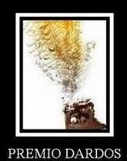
Ho ricevuto questo premio da
Monica1988
Il premio Dardos riconosce i valori
che ogni blogger dimostra ogni giorno
nel suo impegno a trasmettere valori culturali, etici, letterari o personali. |
|